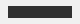

Rust Browser Notes
Brutal Browser renders document pages first.
Install
Use links, readable text, images, and forms before broad JS.

Should not show
Brutal Browser renders document pages first.
Use links, readable text, images, and forms before broad JS.

Should not show